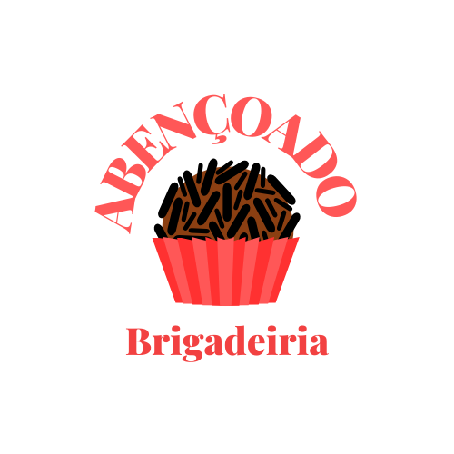

Donos do negócio
- Sócio 1:Rodrigo De Paula Siqueira
- Sócio 2:Rafael Henrique Da Silva Rosa
Nome da empresa
abençoado Brigadeiros.
Negócio da empresa(Setor que irá atuar)
Comercio e confeitaria.
Descrição concisa do negócio.
No resumo e uma confeitaria que tem como principal os brigadeiros simples ou ate mesmo os gourmet,
mais deliciosos e complexos de se fazer. Com preços acessíveis, utilizando ingredientes bons com confeiteiros habilidossos.
Objetivos principais.
Bom para começarmos terá muitos poblemas como os ingredientes o gás, o aluguel para manter a confeitaria,
a meta de vendas para poder pagar a comissão e etc, solucionarei este poblema começando vendendo aos poucos,
vendendo os brigadeiros nos terminais de ônibus ou em centro ate ao ponto de poder investir em aluguel e pessoas
para trabalhar, com este dinheiro dos brigadeiros que será o lucro, investirei ainda mais na empressa, fazendo logos
cartazes, roupas bonitas e sendo higiênico e organizado nos negócios, o meu cliente ideal e aquele que sai de sua casa
para trabalhar e não tem tempo de comer em cassa (ele come meu brigadeiro daí). Investirei totalmente na empresa
quando começar a vender, farei marketing na internet e darei água na boca de quem ver meus vídeos.
Descrição do Negócio
Missão, visão e valor.
Missao:
o propósito pelo qual a empresa existe e porque amamos fazer brigadeiros e também amamos a confeitaria,
como o nome diz e uma bençao a missão também e para Alcançar os cristãos que querem comer um brigadeiro
na confeitaria e sentir em um ambiente agradável para eles lerem estudarem ou meditar.
Visao:
a visão e lucrar e gerar uma confeitaria dos “sonhos” com TV varias especiarias e brigadeiros, gerando
um ambiente confortável e agradevel a TODOS que pisarem os pés La.
Valor:
Isso gastara o meu tempo da minha vida, que talves gerara lucros ou não, gastara recursos, somos uma
equipe apaixonada no que faz nesta área, no entanto fazemos com muito carinho sofrimento e amor.
História da empresa (se aplicável).
A empresa começou por min Rodrigo de P. Siqueira, eu como cristão queria fazer uma confeitaria para pegar o Maximo de
pessoas, e que se sintam bem no ambiente que haverá de chegar, começou comigo pelas 11hr da noite preparando os ingredientes
dos brigadeiros simples ou gourmet, a tarde eu e o Rafael estudávamos muito, e éramos muitos dedicados a confeitaria
(íamos para o culto da bencao terca feira as 20h), pela manha cedinho as 5h levantava e ia para os terminais ou ponto de ônibus
para vender os nossos brigadeiros, as vezes não vendia muitos, e tinha dias que lotava de gente no ônibus para comprar os
brigadeiros abençoados, a dica era que antes de vender os brigadeiros eu como um bom homen, falava do evaneglho de Deus e
do grande amor dele por nos, com Fe agora temos muito mais doque imaginávamos e vamos ter ainda mais!. A confeitaria abre
as 5:30 da manha e fecha as 6h da tarde, com logos incríveis e precos acessíveis para o cliente mais rigorosso ou ate mais
simples.
Descrição do produto/serviço.
Modelo de negócio
Terá como modelo principal o makting nas redes sociais vídeos e postagens com qualidades e preços bem acessíveis para os clientes, a receita terá ingredientes de qualidade e diferente de outras empresas, o brigadeiro será bem recheado, pretendo fazer parcerias, o lugar será agradável fazendo com que que e falado foi cumprido.
Produtos/serviços
- Estudante
pika de mel da silva
- Estudante